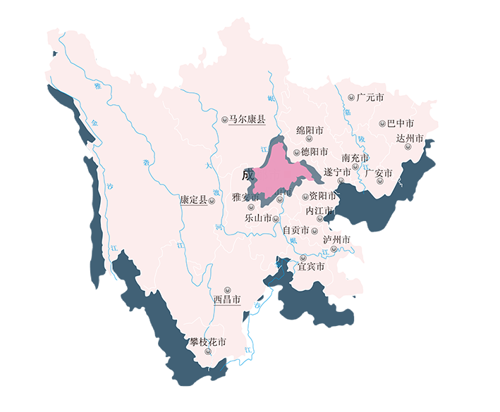

首页
关于病毒情况
采取措施
covido-19
症状
医生建议
联系
01
02
03
重视自身健康
做好自我防护
—分预防胜于
十二分治疗
依法治疫
科学防疫
Previous
Next
四川疫情严重地区占比
截止日期11月28日

新增本土确诊
122人
截止时间：
2022/11/28
新增无症状
648人
截止时间：
2022/11/28
现有本土确诊
2014人
截止时间：
2022/11/28
高风险区
635个
截止时间：
2022/11/28
近
期
症
状
热
搜
榜
近
期
物
资
热
搜
榜
如何做好新冠疫情自我防护措施
疫情中病毒传播无处不在，保护好自己和家人就是为社会做贡献。那么在疫情中如何保护好自己不受病毒感染呢。
戴口罩
佩戴口罩，在外出或者公共场合，比如公共汽车、地铁站、医院，要正规佩戴一次性医用口罩，四个小时要更换一次，戴口罩之前要先分清楚口罩的内面和外面，要学会正确使用医用口罩。
个人卫生
注意个人卫生，要保持勤洗手以及良好的呼吸道卫生习惯，使用肥皂、洗手液用流动水洗手，要保持良好的呼吸道习惯，在咳嗽、打喷嚏时用纸巾、毛巾、手臂挡住口鼻处，避免面向他人。
坚持锻炼
增加体质免疫力，保持环境的清洁与通风。增加体质和免疫力要保证营养均衡、适量运动、作息规律，还要避免过度劳累，每天开窗通风要不少于三次，每次20-30分钟。